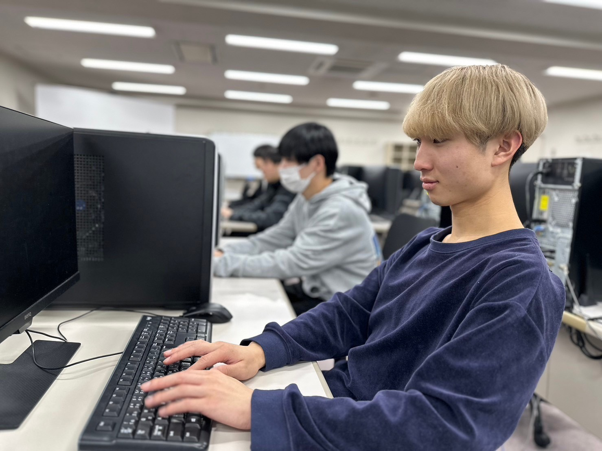
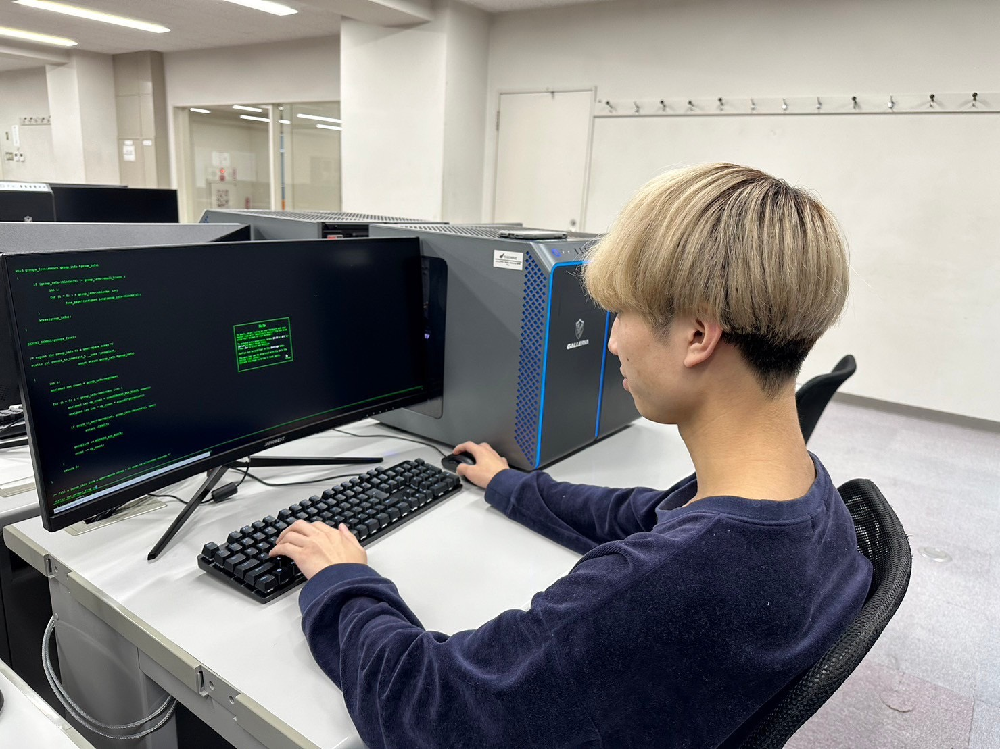
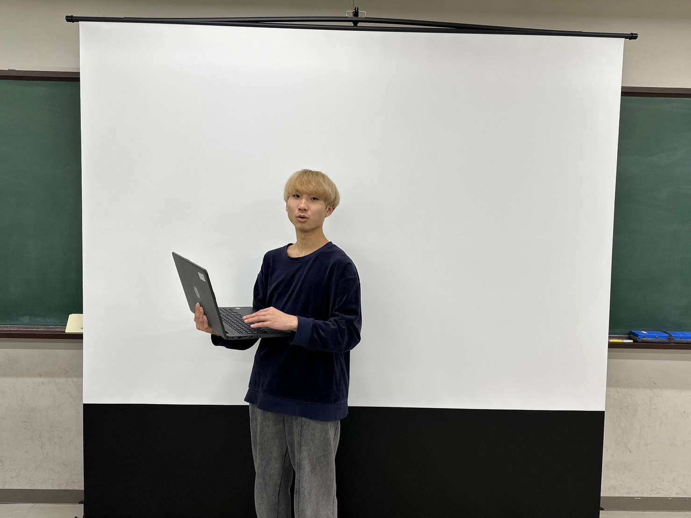

１年次は全員、システム開発・ゲーム・ＣＧ・Ｗｅｂの基礎を学びます。２年次以降は「ゲームプログラミング・システム開発コース専攻」または「ゲーム・ＣＧ・Ｗｅｂクリエイターコース専攻」のいずれかを選択し、各専攻科目によって専門スキルをみがいていきます。同時にシステム開発や他コースの内容も学びますので、幅広い知識を身につけて業界で活躍することができます。
ITシステムエンジニア学科の特色
目指せる職業
・プロジェクトマネージャー
・システムエンジニア
・プログラマ
・ネットワークエンジニア
・ゲームクリエイター
・ＣＧクリエイター
・Ｗｅｂクリエイター
・ＡＩエンジニア
・サーバエンジニア
・情報セキュリティアドミニストレータ
目指せる資格
・情報処理安全確保支援士試験
・エンベデットシステムスペシャリスト試験
・データベーススペシャリスト試験
・ネットワークスペシャリスト試験
・応用情報技術者試験
・基本情報技術者試験
・情報セキュリティマネジメント試験
・マイクロソフト・オフィシャル・トレーナー(MOT)
・情報処理技術者能力認定試験
・Javaプログラミング能力認定試験
・Illustratorクリエイター能力認定試験
・Photoshopクリエイター能力認定試験
3年間、じっくりと学びスキルUP!!
3年制学科の授業内容は、卒業時に到達してもらいたいレベルから逆算したカリキュラム設定となりますので、パソコン初心者の方でも安心して、ITの基礎から学ぶことができます。
オールマイティな知識が身につきます
在学期間中は、すべての分野の基礎となる「システム開発」の勉強をおこないます。これにより2年次以降、ＣＧやゲーム分野を専攻し就職した場合でも、「システムに強い」ＣＧクリエイターやゲームクリエイターとして、各業界で活躍することが可能となります。
多彩な職種＆資格取得がめざせます
2年制学科に比べて学習期間が長い分、3年制学科ではめざせる職種＆資格取得が豊富です。在学期間中にたくさん資格を取り、めざせる職種の幅を広げたい、と考えている方には、3年制学科がお勧めです。
3年間の学習イメージ

ゲームプログラミング部門
ゲーム制作に必要なノウハウを入学直後から学んでいきます。1年次終了までには簡単なゲームが制作できるようになりますが、2年次以降の勉強ではより専門性を高め、制作するゲームの完成度を高めていきます。ネットワークやサーバに関する知識もしっかり身につけますので、自信をもって働くことが可能となります。
システム開発部門
入学後、まずは知識の土台となる「ハードウエア」「ソフトウエア」「プログラム言語」等の基礎知識をゆっくり学びます。2年次には応用技術を用いた各種プログラミング実習やセキュリティに関する勉強が本格化。最終的には自分の力でアプリ制作やシステム改修ができるレベルまで、スキルを高めていきます。
クリエイター部門
1年次より専用ソフトを使用した2Dグラフィックの実習がスタート。 「デザインには興味があるけどパソコンは･･･」という方でも、最初の1年間でクリエイター職の基礎知識を身につけることができます。2年次以降は3DグラフィックやHTMLの応用知識等を学習。 最終的はニーズが高まっているゲーム・CG・Webクリエイターとして活躍できるスキルが身につきます。
時間割の例
【ゲームプログラミング・システム開発コース専攻】

【ゲーム・CG・Ｗｅｂクリエイターコース専攻】

・上記はITシステムエンジニア学科の時間割例となります。
・授業内容・学校行事等の関係で、記載した授業時間に変更が生じる場合があります。
・各種検定試験直前期や卒業課題制作時期（総合制作）においては、5校時目（16：30-18：00）にも授業がおこなわれる場合もあります。
主な選択科目
■ソフトウエア
■Java
■Unity
■JSP・Servlet演習
■アルゴリズム
■SQL演習
■ネットワーク基礎
■サーバ基礎
■ゲーム制作
■HTML演習
■サーバ基礎
■CGデザイン論
■セキュリティ実践演習
■データベース
■AIプログラミング
■2D･3Dグラフィック
■CSS・Website構築
■システム改修
■アプリ制作
■Webマーケティング
■データマイニング
■Unity
■システムマネジメント
■国家試験対策
■検定試験対策
■コミュニケーション授業
■グループワーク
■就職支援授業
■総合制作